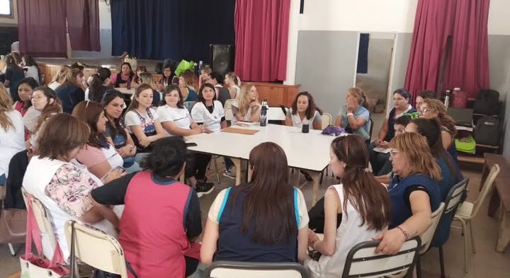

En el módulo anterior, al trabajar la comunicación asertiva, nos aproximamos al concepto de herramientas de comunicación y gestión de conflictos como aquellas técnicas y recursos para crear habilidades y fortalecer nuestros vínculos.
Su uso, como verdaderos dispositivos o artefactos, permite desarrollar competencias en cada docente y generar un acercamiento a métodos pacíficos, a los fines de resolver toda situación conflictiva en la escuela.
En esta oportunidad, continuaremos con su desarrollo reparando en las técnicas más importantes para facilitar nuestra comunicación.

Fuente: Instagram - Subsecretaría de Fortalecimiento Institucional (@sficordoba)